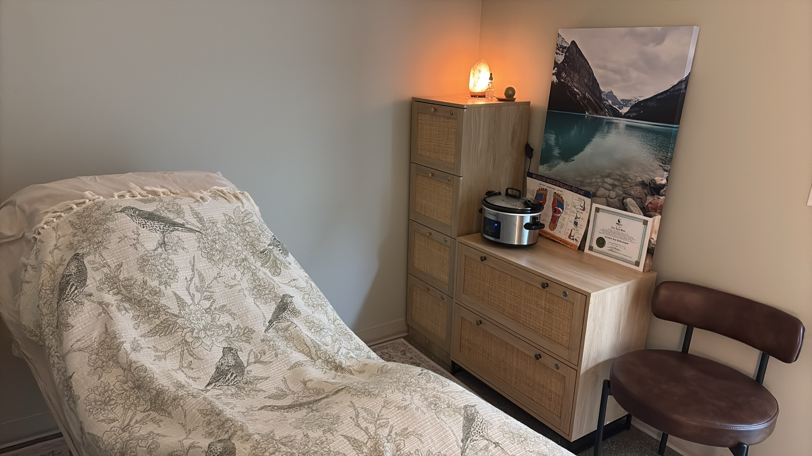

New Clients & FAQ
Everything You Need to Know Before Your First Visit
Learn what to expect from your first reflexology appointment and review answers to common questions about care, scheduling, and treatment.

Easy Booking and Personalized Intake
Before Your Visit
Book online or by phone. Please wear comfortable clothing and arrive a few minutes early so your session can begin smoothly. Please read the information at the Client Safety & Practice Scope page before your appointment.
Your Initial Consultation
Lori reviews your health history, asks about your wellness goals, and explains reflexology techniques that best support your needs.
During the Session
Sessions are gentle and respectful. Lori checks in throughout, adjusts pressure, and focuses on comfort so you can relax completely.
Aftercare Support
After your session, you receive practical suggestions for self-care, hydration, and follow-up visits for best results.
Frequently Asked Questions
Reflexology therapy is a complementary therapy based on the theory that specific pressure points found on the feet, hands, and ears correspond to different organs and systems in the body. By applying targeted pressure to these specific reflex points, it works on two levels: relaxing the body and mind, and easing out tension. This stimulation of the body's natural relaxation response promotes a deep sense of well-being, helps alleviate feelings of stress and anxiety, and can support better health and sleep quality. Furthermore, reflexology can increase blood flow to promote optimal circulation, reduce pain by stimulating the body's natural pain-relieving mechanisms, and may help manage symptoms associated with chronic conditions.
- Dress comfortably: Wear loose, non-restrictive clothing that can easily be adjusted to allow access to the feet, hands, or lower legs.
- Hydrate and eat light: Prioritize hydration 12-24 hours before your appointment, and have a light meal 1-2 hours prior, as a full stomach can hinder relaxation.
- Hygiene: Wash your hands and feet before the session, and avoid applying strong creams or lotions that may interfere with the therapist's work.
- Avoid stimulants: Limit coffee, energy drinks, and other stimulants a few hours prior to your session, as they can interfere with relaxation.
- Prepare your health information: Bring a concise list of your medical history, current ailments, and any medications you are taking, as open and honest communication allows the reflexologist to tailor the session to your specific needs.
- Arrive early: Arriving a few minutes early to complete any necessary forms helps reduce stress and gives the reflexologist time to review your intake.
Most visits are 60 to 75 minutes, including intake and discussion. There are different session options to accomodate each client's needs.
Reflexology is generally safe when performed by a trained therapist. Lori discusses your health history and adapts pressure for comfort and safety. Please read the information at the Client Safety & Practice Scope page before your appointment.
Reflexology can often be safely conducted during pregnancy, but it requires careful modification and open communication with your therapist.
- First Trimester: Treatment is often deferred or modified during the first trimester, as this is a clinically vulnerable period. Certain foot areas should be specifically avoided during early pregnancy.
- High-Risk Pregnancies: If you are experiencing a high-risk pregnancy (such as bleeding, pre-eclampsia, threatened miscarriage, or placenta complications), reflexology is contraindicated unless you have explicit approval from a midwife or obstetrician.
- Communication is Key: It is crucial to inform your reflexologist if you are pregnant or suspect you may be pregnant, as well as the stage of your pregnancy, so they can apply appropriate clinical safeguards and modifications.
Yes! New patients are welcome at Ursu Holistic Wellness. Book online or contact the clinic to schedule your first visit.